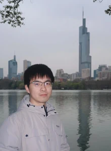

Reliable Agentic AI
-
Long-Horizon Agents:
-
Benchmarks & Evaluation:

Ph.D., Postdoctoral Researcher, A*STAR CFAR, Singapore
I am a postdoctoral researcher at A*STAR CFAR, as part of the Agentic AI pillar.
I finished my Ph.D. at Nanjing University, advised by Prof. Yu-Feng Li, and was a member of LAMDA Group, led by Prof. Zhi-Hua Zhou.
My long-term goal is to build general and robust AI agents that advance artificial general intelligence (AGI), enhance societal productivity, and improve human well-being. My current research focuses on improving the reliability and robustness of agentic systems, supporting scalable deployment and long-term autonomy.
Agentic AI pillar
A comprehensive ecosystem to advance language agents for real-world travel planning:
I am deeply grateful to these students for the opportunity to learn, grow, and explore research together.
Swipe or scroll horizontally to compare all columns.
| Student | Research & papers | With me | Now |
|---|---|---|---|
| Xiao-Wen Yang |
Neuro-Symbolic
MLJ × 1
AAAI × 1
ICML × 1
ICLR × 1
|
Undergraduate @ NJU | Ph.D. @ NJU (with Prof. Yu-Feng Li.) |
| Hao-Sen Shi |
RL
KDD × 1
|
Master’s @ NJU | Algorithm Engineer @ Tencent |
| Haoran Hao |
Neuro-Symbolic
RL
KDD × 1
|
Undergraduate @ NJU | Master’s @ CMU |
| Bo-Wen Zhang |
Agentic AI
Neuro-Symbolic
ICLR × 1
|
Undergraduate @ NJU | Ph.D. @ NJU (with Dr. Lan-Zhe Guo.) |
| Chen-Xi Zhang |
RL
Neuro-Symbolic
|
Master’s @ NJU | Algorithm Engineer @ Bilibili |
| Hong-Jie You |
Neuro-Symbolic
LLM
IJCAI × 1
ICML × 1
Findings of EMNLP × 1
|
Master’s @ NJU | Research Intern @ RedTech |
I love taking photos and sharing little moments from my life.